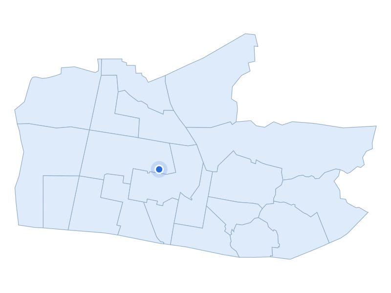

부동산 데이터 | 신혼부부가 사는 곳
거주 수 20위 · 경기 부천시 원미구

부천 상동 도시 가로
지역 자료사진 · 촬영 2025 · CC BY 4.0
거주 신혼부부 · 2024년
7,365쌍
주거 특징·랜드마크
원미구는 중동과 상동에 걸쳐 형성된 중동신도시의 아파트 생활권을 포함합니다.
주거 특징·랜드마크
부천시 정비기본계획은 공동주택 블록과 마을 단위를 함께 다뤄, 개별 단지와 주변 주거지를 같이 살펴볼 기준이 됩니다.
주거 특징·랜드마크
부천중앙공원은 중동신도시 개발과 함께 조성된 근린공원입니다.

경기 부천시 원미구 · 실제 가격 집계구역
파란 점: 단지 위치
지역 아파트 실거래 중위값
7억 500만원
지역 거래 699건
단지 사례
미리내마을(롯데2)
7억 450만원
단지 거래 8건
2026-05-01 ~ 2026-10-31 계약
전용 83~85㎡ · 아파트 매매 · 취소 제외